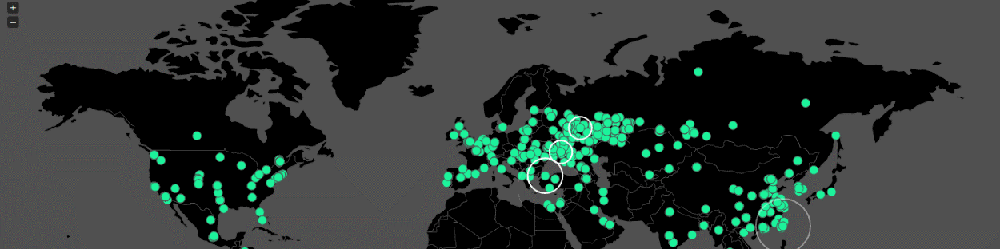
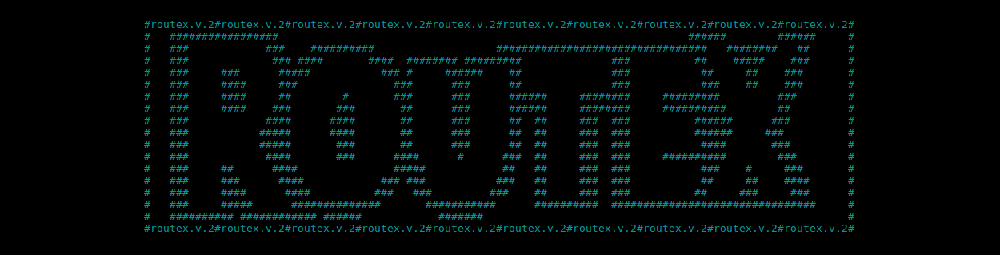
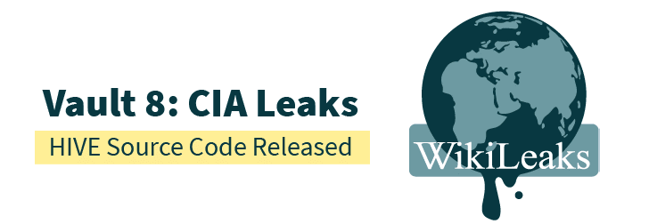
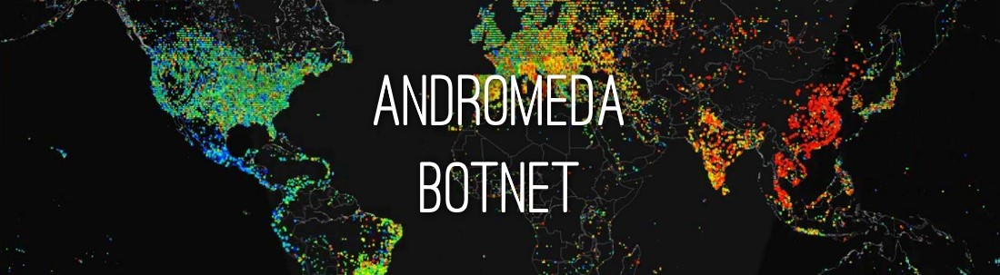
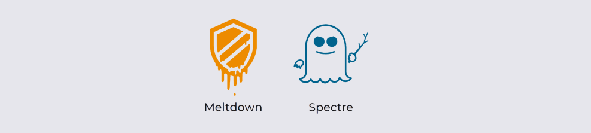
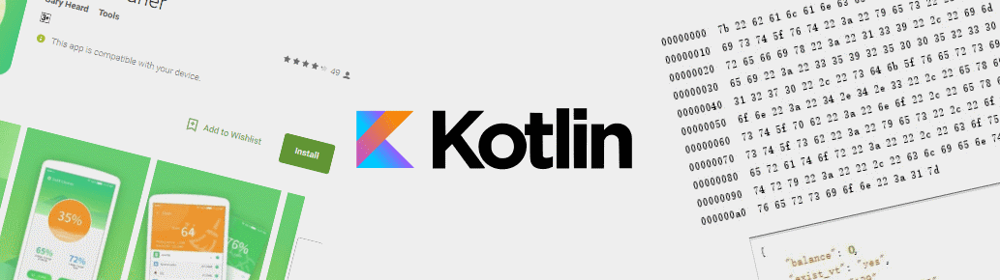

14 Avril 2017
Fuite d'outils offensifs de la NSA
Fuite de plusieurs exploits, codes, et outils d'exploitations de l'Equation Group (Groupe de cyber-espionnage de la NSA) par les Shadowbrokers. Avec notament une divulgation de l'exploit SMB EternalBlue (MS17-010) et DoublePulsar (CVE-2017-0143).
12 MAI 2017
WannaCry Ransomware
Première infection d'une machine par le ransomware WannaCry, qui utilise une vulnérabilité du service SMB Windows comme vecteur d'infection. Le ransomware utilise les exploits DoublePulsar et EternalBlue divulgués quelques dizaines de jours plus tôt.
19 MAI 2017
EternalRocks Worm
Découverte d'un ver utilisant 7 des exploits dévoilés par les shadowbrokers pour infecter ses victimes, toujours au travers du service SMB Windows. Celui-ci est plus complexe mais moins dangereux que le ransomware WannaCry. Il s'avère au final que le ver a simplement été fait par un utilisateur ayant eu accès aux leak de la NSA, et que la charge utile du ver n'est pas malveillante, mais bloque le port SMB utilisé pour infecter la machine.
20 MAI 2017
WannaCry Kill-Switch

Après avoir étudié WannaCry en profondeur, un chercheur découvre un kill-switch permettant de freiner l'évolution du malware. Afin de contourner les différentes sandbox applicatives qu'il pourait rencontrer, le malware cherche à atteindre un certain domaine. Si le domaine n'est pas joignable, le code s'arrête imédiatement.
20 JUIN 2017
BtcMine
Toujours en lien avec les dossiers de la NSA divulgués par les shadowbrokers, une première vague de nouveaux malwares voient le jour. Se basant une nouvelle fois sur le service SMB et l'exploit DoublePulsar, cette nouvelle géneration de malware cible les ressources des machines infectées, en les utilisants pour miner des cryptocurrencies (ici des Moneros).
28 JUIN 2017
Vault 7 - BrutalKangaroo & ELSA
Sous le nom "Vault7", WikiLeak publie des informations sur l'existence de deux malwares développés par la CIA : BrutalKangaroo et ELSA. Le premier permet d'infecter des ordinateurs sur des réseaux isolés (air-gapped), alors que le second permet de géolocaliser des utilisateurs via leurs connexions WiFi.
21 JUIL 2017
DarkHotel Malware Campaign
Nouveau malware écrit par le groupe "DarkHotel" ciblant principalement des personnalités politiques. Le code malveillant est déployé via une campagne de phishing par mail. Les mails incitent l'utilisateur à ouvrir une pièce jointe contenant une archive RAR SFX (auto-extratction). Celle-ci installe ensuite une APT-like (Advanced Persistent Threat) sur la machine, qui va exfiltrer des informations vers un server C&C.
13 SEPT 2017
RouteX Malware

Nommé "RouteX", ce nouveau malware exploite une vulnérabilité (CVE-2016-10176) sur les routeurs Netgear afin de les transformer en serveur proxy SOCKS. Depuis les routeurs infectés, l'auteur du malware teste des combos d'identifiants fuités sur plusieurs services online, dans le but de compromettre des comptes utilisateurs.
23 SEPT 2017
Coinhive Miner
Démocratisation de la bibliothèque Coinhive au sein de plusieurs malwares. L'idée originale de Coinhive consiste à charger un module Javascript au sein du naviguateur pour miner des Monero (Crypto-monnaie). En détournant l'utilisation primaire de la bibliothèques, beaucoup de nouveaux malwares commencent à voir le jour.
24 OCT 2017
Découverte d'un nouveau ransomware nommé "BadRabbit" touchant principalement des administrations et entreprises privées des pays d'Europe de l'Est. Le ransomware se répand via une fausse mise à jour Flash, avant d'infecter latéralement d'autres machines via un kit d'exploits.
09 NOV 2017
Hive C&C Server

Leak du projet "Hive" de la CIA : un des composants principal du back-end de contrôle à distance des malwares développés par l'agence. Le projet Hive permet à des opérateurs distants d'interagir avec différents malwares dans le cadre d'opérations diverses. L'infrastructure complexe de Hive en fait un sujet d'étude très intéressant.
23 NOV 2017
Déploiement du ransomware Scarab via Necurs, le plus vaste botnet de spam mondial. Les mails malveillants contiennent à ce qui s'apparente être un scan de document, qui s'avère en fait contenir une archive Zip, contenant elle-même un script Visual Basic téléchargeant et exécutant l'actuel ransomware. Le ransomware est inédit de part son code écrit en Delphi.
04 DEC 2017

Andromeda est le nom du Botnet contenant les machines infectées par le malware "Eponymous". S'étalant sur 233 pays, ce botnet croît de 5 a 6 millions de nouveaux bots par mois. A la suite d'une vaste opération du FBI, Europol (E3C), Eurojust, la Cybercrime Action Task Force (J-CAT) et des acteurs privés (l'ICANN, Microsoft, ESET, etc ...) le botnet a enfin été coupé. Les 460 plus petits réseaux de machines composants le botnet Andromeda ont tous été désolidarisés de leurs serveurs de contrôle. L'auteur du malware a été arrêté.
04 JAN 2018

Découverte de deux sévères failles par canaux auxiliaires sur les CPU : Spectre et Meltdown. Les deux attaques permettent de faire fuiter des informations mémoires. Meldown permet à un processus utilisateur non privilégié d'avoir accès à des données du noyau. Spectre permet quant à lui d'extraire des données mémoires relatives à d'autres applications (exemple : voler les cookies utilisateur du naviguateur à partir d'un code JS malveillant).
11 JAN 2018
Kotlin Malware

Découverte du premier malware écrit en Kotlin, un langage de programmation interopérable avec les bibliothèques Android. Le malware est caché dans une application android légitime appelée "Swift Cleaner". Le malware clique automatiquement sur des publicités, permet d'exécuter des commandes à distance et d'usurper le numéro de téléphone de l'appareil pour s'abonner à des services payants.
12 FEV 2018
Olympic Destroyer Malware
Nouveau malware "Olympic Destroyer". D'après les rapports, celui-ci est à l'origine de nombreuses pannes informatiques coordonnées rapportées au moment de la cérémonie d'ouverture des JO d'hiver 2018 à PyeongChang. Le malware a pour unique but rendre inutilisable les machines sur lesquelles il est déployé, et de se déployer latéralement via un kit d'exploits intégrés.
5 MARS 2018
Des chercheurs en sécurité ont découvert un nouveau malware "ComboJack", qui détecte lorsqu'un utilisateur copie une adresse de porte monnaie de crypto-monnaies, afin de remplacer cette adresse par celle du créateur du malware. L'infection se fait via un e-mail infecté par un fichier PDF malicieux.
30 MARS 2018
AutoHotKey Malware
Émergeance de nouveaux malwares écrits avec le langage de programmation AutoHotKey (AHK). AHK est un langage de programamtion open-source développé pour les systèmes Microsoft. Initialement, celui-ci permet de mapper virtuellement les touches du clavier utilisateur.